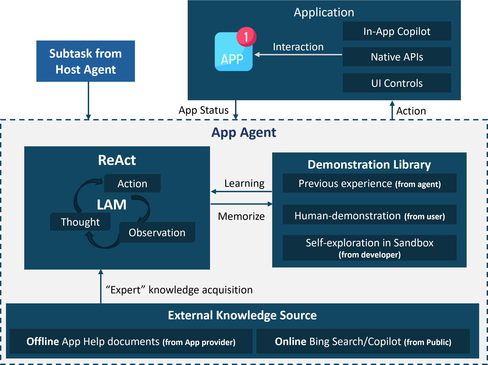
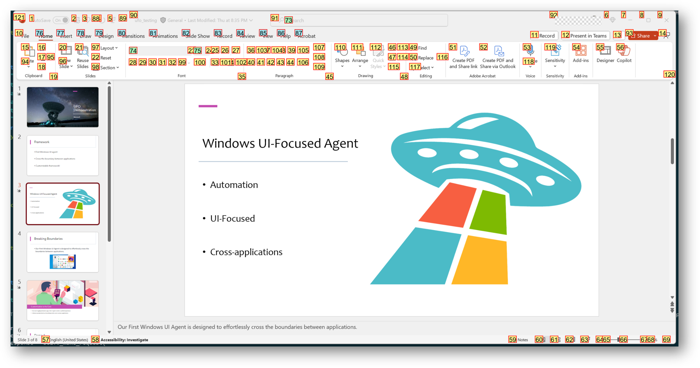
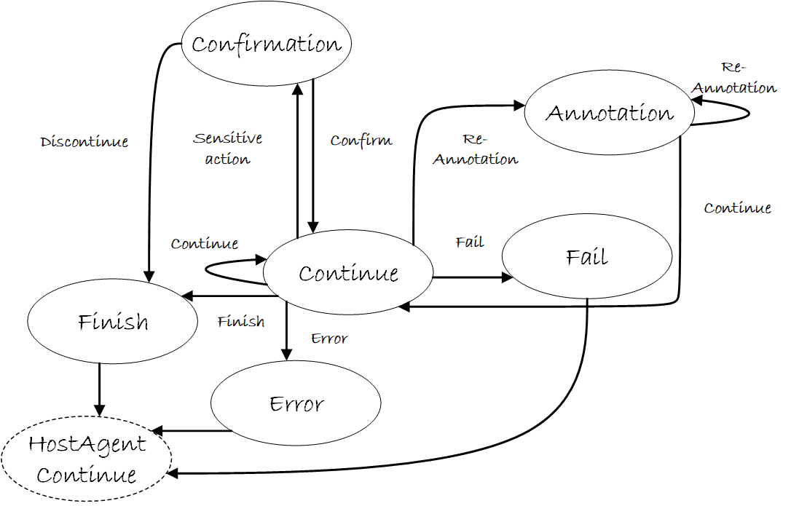

AppAgent 👾
An AppAgent is responsible for iteratively executing actions on the selected applications until the task is successfully concluded within a specific application. The AppAgent is created by the HostAgent to fulfill a sub-task within a Round. The AppAgent is responsible for executing the necessary actions within the application to fulfill the user's request. The AppAgent has the following features:
- ReAct with the Application - The
AppAgentrecursively interacts with the application in a workflow of observation->thought->action, leveraging the multi-modal capabilities of Visual Language Models (VLMs) to comprehend the application UI and fulfill the user's request. - Comprehension Enhancement - The
AppAgentis enhanced by Retrieval Augmented Generation (RAG) from heterogeneous sources, including external knowledge bases, and demonstration libraries, making the agent an application "expert". - Versatile Skill Set - The
AppAgentis equipped with a diverse set of skills to support comprehensive automation, such as mouse, keyboard, native APIs, and "Copilot".
Tip
You can find the how to enhance the AppAgent with external knowledge bases and demonstration libraries in the Reinforcing AppAgent documentation.
We show the framework of the AppAgent in the following diagram:

AppAgent Input
To interact with the application, the AppAgent receives the following inputs:
| Input | Description | Type |
|---|---|---|
| User Request | The user's request in natural language. | String |
| Sub-Task | The sub-task description to be executed by the AppAgent, assigned by the HostAgent. |
String |
| Current Application | The name of the application to be interacted with. | String |
| Control Information | Index, name and control type of available controls in the application. | List of Dictionaries |
| Application Screenshots | Screenshots of the application, including a clean screenshot, an annotated screenshot with labeled controls, and a screenshot with a rectangle around the selected control at the previous step (optional). | List of Strings |
| Previous Sub-Tasks | The previous sub-tasks and their completion status. | List of Strings |
| Previous Plan | The previous plan for the following steps. | List of Strings |
| HostAgent Message | The message from the HostAgent for the completion of the sub-task. |
String |
| Retrived Information | The retrieved information from external knowledge bases or demonstration libraries. | String |
| Blackboard | The shared memory space for storing and sharing information among the agents. | Dictionary |
Below is an example of the annotated application screenshot with labeled controls. This follow the Set-of-Mark paradigm.

By processing these inputs, the AppAgent determines the necessary actions to fulfill the user's request within the application.
Tip
Whether to concatenate the clean screenshot and annotated screenshot can be configured in the CONCAT_SCREENSHOT field in the config_dev.yaml file.
Tip
Whether to include the screenshot with a rectangle around the selected control at the previous step can be configured in the INCLUDE_LAST_SCREENSHOT field in the config_dev.yaml file.
AppAgent Output
With the inputs provided, the AppAgent generates the following outputs:
| Output | Description | Type |
|---|---|---|
| Observation | The observation of the current application screenshots. | String |
| Thought | The logical reasoning process of the AppAgent. |
String |
| ControlLabel | The index of the selected control to interact with. | String |
| ControlText | The name of the selected control to interact with. | String |
| Function | The function to be executed on the selected control. | String |
| Args | The arguments required for the function execution. | List of Strings |
| Status | The status of the agent, mapped to the AgentState. |
String |
| Plan | The plan for the following steps after the current action. | List of Strings |
| Comment | Additional comments or information provided to the user. | String |
| SaveScreenshot | The flag to save the screenshot of the application to the blackboard for future reference. |
Boolean |
Below is an example of the AppAgent output:
{
"Observation": "Application screenshot",
"Thought": "Logical reasoning process",
"ControlLabel": "Control index",
"ControlText": "Control name",
"Function": "Function name",
"Args": ["arg1", "arg2"],
"Status": "AgentState",
"Plan": ["Step 1", "Step 2"],
"Comment": "Additional comments",
"SaveScreenshot": true
}
Info
The AppAgent output is formatted as a JSON object by LLMs and can be parsed by the json.loads method in Python.
AppAgent State
The AppAgent state is managed by a state machine that determines the next action to be executed based on the current state, as defined in the ufo/agents/states/app_agent_states.py module. The states include:
| State | Description |
|---|---|
CONTINUE |
The AppAgent continues executing the current action. |
FINISH |
The AppAgent has completed the current sub-task. |
ERROR |
The AppAgent encountered an error during execution. |
FAIL |
The AppAgent believes the current sub-task is unachievable. |
| CONFIRM | The AppAgent is confirming the user's input or action. |
| SCREENSHOT | The AppAgent believes the current screenshot is not clear in annotating the control and requests a new screenshot. |
The state machine diagram for the AppAgent is shown below:

The AppAgent progresses through these states to execute the necessary actions within the application and fulfill the sub-task assigned by the HostAgent.
Knowledge Enhancement
The AppAgent is enhanced by Retrieval Augmented Generation (RAG) from heterogeneous sources, including external knowledge bases and demonstration libraries. The AppAgent leverages this knowledge to enhance its comprehension of the application and learn from demonstrations to improve its performance.
Learning from Help Documents
User can provide help documents to the AppAgent to enhance its comprehension of the application and improve its performance in the config.yaml file.
Tip
Please find details configuration in the documentation.
Tip
You may also refer to the here for how to provide help documents to the AppAgent.
In the AppAgent, it calls the build_offline_docs_retriever to build a help document retriever, and uses the retrived_documents_prompt_helper to contruct the prompt for the AppAgent.
Learning from Bing Search
Since help documents may not cover all the information or the information may be outdated, the AppAgent can also leverage Bing search to retrieve the latest information. You can activate Bing search and configure the search engine in the config.yaml file.
Tip
Please find details configuration in the documentation.
Tip
You may also refer to the here for the implementation of Bing search in the AppAgent.
In the AppAgent, it calls the build_online_search_retriever to build a Bing search retriever, and uses the retrived_documents_prompt_helper to contruct the prompt for the AppAgent.
Learning from Self-Demonstrations
You may save successful action trajectories in the AppAgent to learn from self-demonstrations and improve its performance. After the completion of a session, the AppAgent will ask the user whether to save the action trajectories for future reference. You may configure the use of self-demonstrations in the config.yaml file.
Tip
You can find details of the configuration in the documentation.
Tip
You may also refer to the here for the implementation of self-demonstrations in the AppAgent.
In the AppAgent, it calls the build_experience_retriever to build a self-demonstration retriever, and uses the rag_experience_retrieve to retrieve the demonstration for the AppAgent.
Learning from Human Demonstrations
In addition to self-demonstrations, you can also provide human demonstrations to the AppAgent to enhance its performance by using the Step Recorder tool built in the Windows OS. The AppAgent will learn from the human demonstrations to improve its performance and achieve better personalization. The use of human demonstrations can be configured in the config.yaml file.
Tip
You can find details of the configuration in the documentation.
Tip
You may also refer to the here for the implementation of human demonstrations in the AppAgent.
In the AppAgent, it calls the build_human_demonstration_retriever to build a human demonstration retriever, and uses the rag_experience_retrieve to retrieve the demonstration for the AppAgent.
Skill Set for Automation
The AppAgent is equipped with a versatile skill set to support comprehensive automation within the application by calling the create_puppteer_interface method. The skills include:
| Skill | Description |
|---|---|
| UI Automation | Mimicking user interactions with the application UI controls using the UI Automation and Win32 API. |
| Native API | Accessing the application's native API to execute specific functions and actions. |
| In-App Agent | Leveraging the in-app agent to interact with the application's internal functions and features. |
By utilizing these skills, the AppAgent can efficiently interact with the application and fulfill the user's request. You can find more details in the Automator documentation and the code in the ufo/automator module.
Reference
Bases: BasicAgent
The AppAgent class that manages the interaction with the application.
Initialize the AppAgent. :name: The name of the agent.
| Parameters: |
|
|---|
Source code in agents/agent/app_agent.py
28 29 30 31 32 33 34 35 36 37 38 39 40 41 42 43 44 45 46 47 48 49 50 51 52 53 54 55 56 57 58 59 60 61 62 63 | |
status_manager: AppAgentStatus
property
Get the status manager.
build_experience_retriever(db_path)
Build the experience retriever.
| Parameters: |
|
|---|
| Returns: |
|
|---|
Source code in agents/agent/app_agent.py
345 346 347 348 349 350 351 352 353 | |
build_human_demonstration_retriever(db_path)
Build the human demonstration retriever.
| Parameters: |
|
|---|
| Returns: |
|
|---|
Source code in agents/agent/app_agent.py
355 356 357 358 359 360 361 362 363 | |
build_offline_docs_retriever()
Build the offline docs retriever.
Source code in agents/agent/app_agent.py
327 328 329 330 331 332 333 | |
build_online_search_retriever(request, top_k)
Build the online search retriever.
| Parameters: |
|
|---|
Source code in agents/agent/app_agent.py
335 336 337 338 339 340 341 342 343 | |
context_provision(request='')
Provision the context for the app agent.
| Parameters: |
|
|---|
Source code in agents/agent/app_agent.py
365 366 367 368 369 370 371 372 373 374 375 376 377 378 379 380 381 382 383 384 385 386 387 388 389 390 391 392 393 394 395 396 397 398 399 400 401 | |
create_puppteer_interface()
Create the Puppeteer interface to automate the app.
| Returns: |
|
|---|
Source code in agents/agent/app_agent.py
298 299 300 301 302 303 | |
external_knowledge_prompt_helper(request, offline_top_k, online_top_k)
Retrieve the external knowledge and construct the prompt.
| Parameters: |
|
|---|
| Returns: |
|
|---|
Source code in agents/agent/app_agent.py
199 200 201 202 203 204 205 206 207 208 209 210 211 212 213 214 215 216 217 218 219 220 221 222 223 224 225 226 227 228 229 230 231 232 233 234 235 236 237 238 239 240 | |
get_prompter(is_visual, main_prompt, example_prompt, api_prompt, app_root_name)
Get the prompt for the agent.
| Parameters: |
|
|---|
| Returns: |
|
|---|
Source code in agents/agent/app_agent.py
65 66 67 68 69 70 71 72 73 74 75 76 77 78 79 80 81 82 83 84 | |
message_constructor(dynamic_examples, dynamic_tips, dynamic_knowledge, image_list, control_info, prev_subtask, plan, request, subtask, host_message, include_last_screenshot)
Construct the prompt message for the AppAgent.
| Parameters: |
|
|---|
| Returns: |
|
|---|
Source code in agents/agent/app_agent.py
86 87 88 89 90 91 92 93 94 95 96 97 98 99 100 101 102 103 104 105 106 107 108 109 110 111 112 113 114 115 116 117 118 119 120 121 122 123 124 125 126 127 128 129 130 131 132 133 134 135 136 137 138 139 140 141 142 | |
print_response(response_dict)
Print the response.
| Parameters: |
|
|---|
Source code in agents/agent/app_agent.py
144 145 146 147 148 149 150 151 152 153 154 155 156 157 158 159 160 161 162 163 164 165 166 167 168 169 170 171 172 173 174 175 176 177 178 179 180 181 182 183 184 185 186 187 188 189 190 191 192 193 194 195 196 197 | |
process(context)
Process the agent.
| Parameters: |
|
|---|
Source code in agents/agent/app_agent.py
289 290 291 292 293 294 295 296 | |
process_comfirmation()
Process the user confirmation.
| Returns: |
|
|---|
Source code in agents/agent/app_agent.py
305 306 307 308 309 310 311 312 313 314 315 316 317 318 | |
rag_demonstration_retrieve(request, demonstration_top_k)
Retrieving demonstration examples for the user request.
| Parameters: |
|
|---|
| Returns: |
|
|---|
Source code in agents/agent/app_agent.py
267 268 269 270 271 272 273 274 275 276 277 278 279 280 281 282 283 284 285 286 287 | |
rag_experience_retrieve(request, experience_top_k)
Retrieving experience examples for the user request.
| Parameters: |
|
|---|
| Returns: |
|
|---|
Source code in agents/agent/app_agent.py
242 243 244 245 246 247 248 249 250 251 252 253 254 255 256 257 258 259 260 261 262 263 264 265 | |